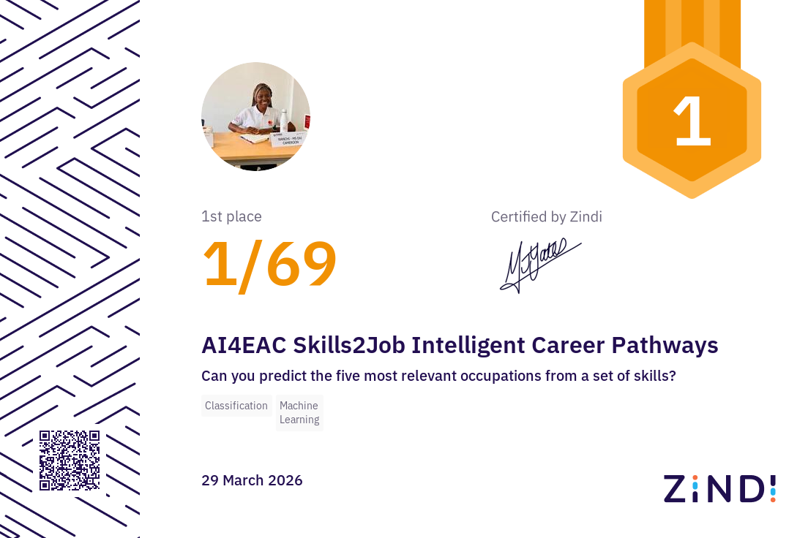
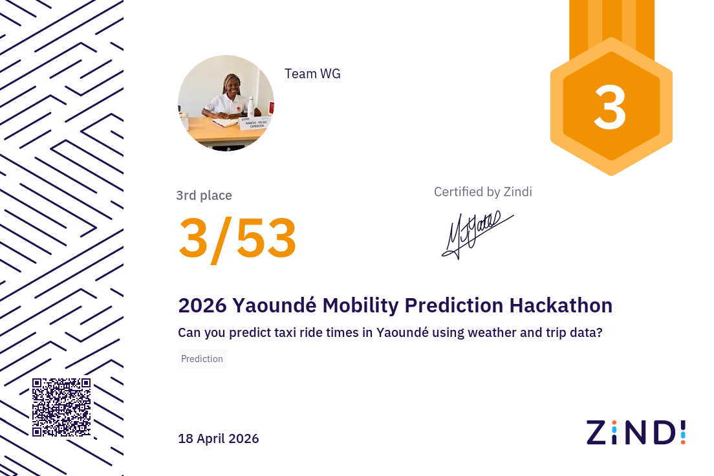

Graduate Research Assistant
Vision & Language Lab, CMU Africa | 2025 - Present
Designing end-to-end speech translation pipelines for Bantu languages, building PyTorch data workflows, and running reproducible distributed training experiments.
I'm Wanchi Lucia Yen, an AI researcher from Cameroon pursuing an MS in Engineering Artificial Intelligence at Carnegie Mellon University Africa. My work spans low-resource Bantu speech translation, Central African Sign Language recognition, and privacy-preserving AI systems for communities that deserve tools built with them.

Designing speech translation and TTS systems for Bantu languages, with rigorous evaluation for high-stakes settings like education and healthcare.
Building Central African Sign Language recognition systems that preserve privacy, reduce model footprint, and generalize to new signers.
Pose-only Central African Sign Language recognition with signer-independent evaluation across 19 participants and a deployment-friendly 99MB footprint.
Read the researchVision & Language Lab, CMU Africa | 2025 - Present
Designing end-to-end speech translation pipelines for Bantu languages, building PyTorch data workflows, and running reproducible distributed training experiments.
Credable
Applied data science and machine learning skills in a fintech environment focused on practical model development and analytics.
ECHO | 2025 - Present
Coordinating AI research, software engineering, product design, and stakeholder alignment for a real-time multilingual voice translation startup.
YEN Pastries | 2019 - 2022
Founded and operated a pastry and catering venture, trained young women in practical skills, and grew an online community of more than 1,100 followers.
GPA 3.9/4.0 | 2025 - 2027 | Mastercard Foundation Scholar
GPA 3.58/4.0 | 2022 - 2025
Facilitated privacy-preserving AI training for 25 female students and helped teach Python to 56 students at Mahama Refugee Camp.
Selected work across multimodal sign language recognition, low-resource speech, and responsible AI deployment.
Developed a privacy-preserving transformer pipeline using pose-only representations, 225-D kinematic features, and signer-independent evaluation across 19 participants.
Built a synthetic data generation and distillation pipeline for low-resource Kinyarwanda speech technologies using a 51-hour Kinya-Synth-50h corpus.
Designing robust end-to-end speech translation systems that reduce cascading errors and improve reliability for African language technologies.
Contributed to the WAXALNet ecosystem for African language benchmarking, open model cards, and public-facing resources for the community.
Group name: WAXALNet. Maintainer: Sunday Cmu.
Machine learning competitions where rigorous validation, leaderboard discipline, and practical modeling came together.

Built a ranking system to predict the five most relevant occupations from structured skill profiles, winning overall across competitors from eight African countries.
View competition
Predicted taxi ride times in Yaoundé using weather and trip data, placing third in the Zindi hackathon.
View competitionRecognized as Best First Timer in the Kaggle-hosted WiDS Worldwide Global Datathon 2026.
View competitionAvailable for research collaborations, AI product work, keynote speaking, and educational workshops on inclusive AI and accessibility.
Direct Inquiries
wluciaye@andrew.cmu.eduBased In
Kigali, Rwanda | Worldwide